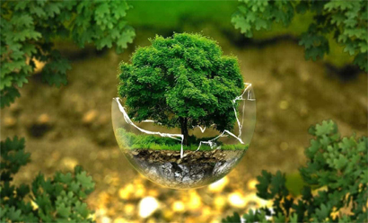

O que é?
O desenvolvimento que procuro satisfazer as necessidades da geração atual, sem comprometer a capacidade das gerações futuras de satisfazerem as suas próprias necessidades, esta é a definição mais comum de desenvolvimento sustentável. Em resumo, é o desenvolvimento que não esgota os recursos para o futuro.

Importância
Ser sustentável é essencial para a preservação do meio ambiente. Com ações sustentáveis os recursos naturais não se esgotam, podendo ser utilizados por gerações futuras, por isso, quando você faz a sua parte, deixa de prejudicar o meio ambiente.
